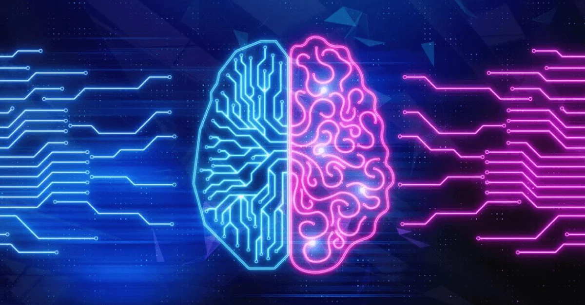

| Inteligência artificial | Um dos maiores desenvolvimentos tecnológicos |
A inteligência artificial é um campo da ciência da computação que se dedica ao estudo e ao desenvolvimento de máquinas e programas computacionais capazes de reproduzir o comportamento humano na tomada de decisões e na realização de tarefas, desde as mais simples até as mais complexas. É comumente referida pela sigla IA ou AI (em inglês, artificial intelligence). Com maior desenvolvimento a partir da década de 1950, a inteligência artificial já faz parte da vida cotidiana das pessoas por meio dos assistentes de voz, dos mecanismos de pesquisa, dos carros autônomos e das redes sociais. Apesar de trazerem inúmeros benefícios e avanços importantes em diversas áreas, muito se debate a respeito dos limites éticos da inteligência artificial e do papel que elas desempenham na nossa sociedade atual.
Veja mais sobre "Inteligência artificial" em: |
|---|---|---|
|  | ||
O funcionamento da inteligência artificial, de maneira simplificada, acontece por meio da coleta e da combinação de um grande volume dados seguido da identificação de determinados padrões nesse conjunto de informações. Com esse processo, que geralmente se dá mediante a utilização de algoritmos pré-programados, o software consegue tomar decisões e realizar tarefas de maneira autônoma.
Disponível em: https://brasilescola.uol.com.br/informatica/inteligencia-artificial.html